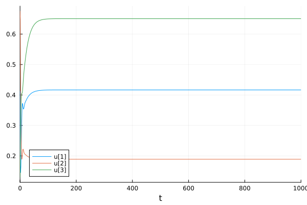

Simulate the Community Dynamics
Previous sections tackled how to create a model representing the desired ecological community. We now explain how to simulate the dynamics of this community. In short, we provide a function simulate that takes a model and a time interval as input and returns the temporal trajectory of the community. This function uses the DifferentialEquations package to solve the system of ordinary differential equations.
Basic Usage
Let's first illustrate how to simulate a simple community of three species.
using EcologicalNetworksDynamics, Plots
foodweb = Foodweb([3 => 2, 2 => 1])
m = default_model(foodweb)
B0 = rand(3) # Vector of initial biomasses.
t = 1_000
sol = simulate(m, B0, t)retcode: Success
Interpolation: 3rd order Hermite
t: 32-element Vector{Float64}:
0.0
0.08063604317831509
0.21652740646568663
0.39874128772699496
0.6545116008594101
0.9346342803792489
1.3079884309975418
1.7435326059432183
2.301769330758533
3.051774364855098
⋮
28.883180817214303
38.051376679077805
47.982092391996744
63.98944162685159
84.2590234964692
118.38713068945643
176.5875025045696
386.46079033997063
1000.0
u: 32-element Vector{Vector{Float64}}:
[0.32218533196373544, 0.8047956756214641, 0.427029746751198]
[0.28486698114444126, 0.7942679875951311, 0.44359289424682996]
[0.2397200868826782, 0.7663641621718024, 0.47247654744773643]
[0.2022656934543167, 0.7157347534403486, 0.5125600785444336]
[0.17459512624007392, 0.6318364301136877, 0.569667739292581]
[0.16188488530601416, 0.5358293534987584, 0.6298150580339928]
[0.16030235426972486, 0.4180449702795417, 0.6984170055045654]
[0.1718936225212125, 0.3107808519695879, 0.7530075681752064]
[0.2009215954673993, 0.22272476447423875, 0.7841865876855265]
[0.2570484724635395, 0.16276066286295332, 0.7842194782786236]
⋮
[0.4192343196378451, 0.18801830213775375, 0.6597269218210579]
[0.4180304551261339, 0.1884473094107808, 0.6556312842794572]
[0.4173185541848668, 0.18869904074599814, 0.6532264787872815]
[0.41679925852193395, 0.18888431272216277, 0.6514678689023244]
[0.4165927114068174, 0.1889578363176896, 0.6507694338637546]
[0.4165271103055326, 0.18898125096725837, 0.6505476261907497]
[0.4165240089592707, 0.18898235606376423, 0.6505371194479664]
[0.4165244067260442, 0.18898221395569825, 0.6505384672965223]
[0.4165243373177461, 0.18898223873081726, 0.6505382325083497]We can access the solution of the simulation with the output of the simulate function. We list below some useful properties of the solution:
sol.t # Time steps.
sol.u # Biomasses at each time step.
sol.u[1] # Biomasses of the first time step.
sol.u[end] # Biomasses of the last time step.3-element Vector{Float64}:
0.4165243373177461
0.18898223873081726
0.6505382325083497The solution can be plotted with the plot function from the Plots package.
plot(sol)
The duration of the simulation can be changed with, for instance to reduce the simulation time to 100 time units:
smaller_t = 100
sol = simulate(m, B0, smaller_t)
sol.t[end] # The last time step.100.0Callbacks
We will now go through some advanced features of the simulate function. First, the callback keyword argument allows specifying a function that will be called at each time step of the simulation. We provide a built-in callback extinction_callback which extinguishes the species whose biomass falls below a given threshold. This threshold is set by default to 1e-12, but can be changed.
foodweb = Foodweb([3 => 1, 2 => 1]) # Two predators feeding on one prey.
m = default_model(foodweb, Metabolism([0, 0.1, 100.0])) # Predator (3) has a too high metabolic rate to survive.
sol = simulate(m, [1, 1, 1], 100_000; callback = nothing) # No callback.
sol[end]3-element Vector{Float64}:
0.18898223650461363
0.6897057785564755
5.474600390482506e-175callback = extinction_callback(m, 1e-6)
sol = simulate(m, [1, 1, 1], 100_000; callback) # High extinction threshold.
sol[end]3-element Vector{Float64}:
0.18894484615604795
0.6897503358890235
0.0callback = extinction_callback(m, 1e-12)
sol = simulate(m, [1, 1, 1], 100_000; callback) # Low extinction threshold.
sol[end]3-element Vector{Float64}:
0.18898223650461363
0.6897057785564753
0.0Other callback functions are available in the DiffEqCallbacks package, and can be used in the same way.
Choose a Specific Solver
Depending on your needs, you may want to choose a specific solver for the simulation. As we use the solve function of the DifferentialEquations package, we can pass any solver available in this package (see the list of available solvers). Indeed, we allow the user to pass any keyword argument of the solve function to the simulate function.
import DifferentialEquations: Tsit5
sol = simulate(m, [1, 1, 1], 1_000; alg = Tsit5())
sol.algTsit5(; stage_limiter! = trivial_limiter!, step_limiter! = trivial_limiter!, thread = static(false),)